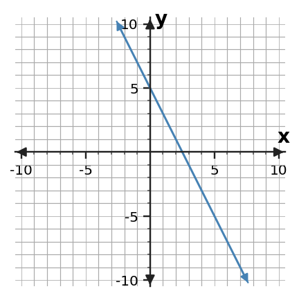

Algebra 1 · 1.3 Function Families · Check Your Understanding
Intro
1. A table adds the same amount to y for every +1 in x. Which function family is most likely and why?
Intro
2. A table multiplies y by 3 for every +1 in x. Which family is most likely and what evidence supports it?
Review
3. A has rate 4 and initial value -2. B has rate 1 and initial value 8. Which grows faster and which starts higher?
Review
4. At x=3, A=17 and B=14. Is that one comparison enough to know which relationship has the larger rate? Explain.
Mastery
5. Find the slope of the line shown using rise/run.

Mastery
6. A delivery van travels 126 miles in 3 hours at a constant rate. Find and interpret the rate of change.